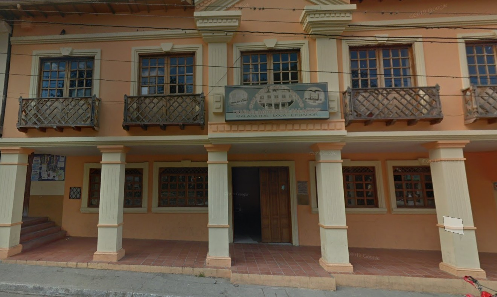
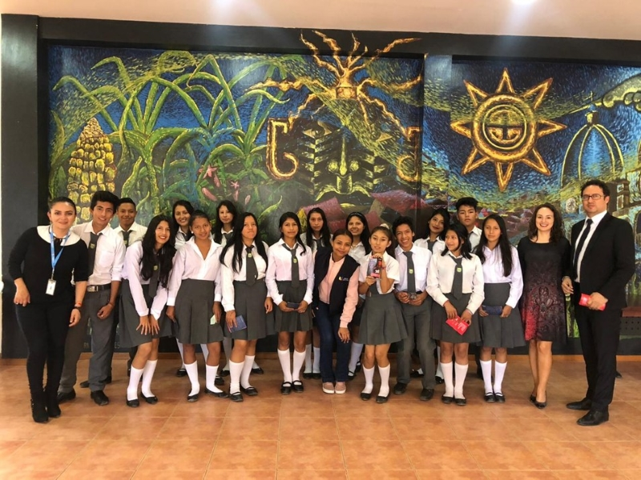
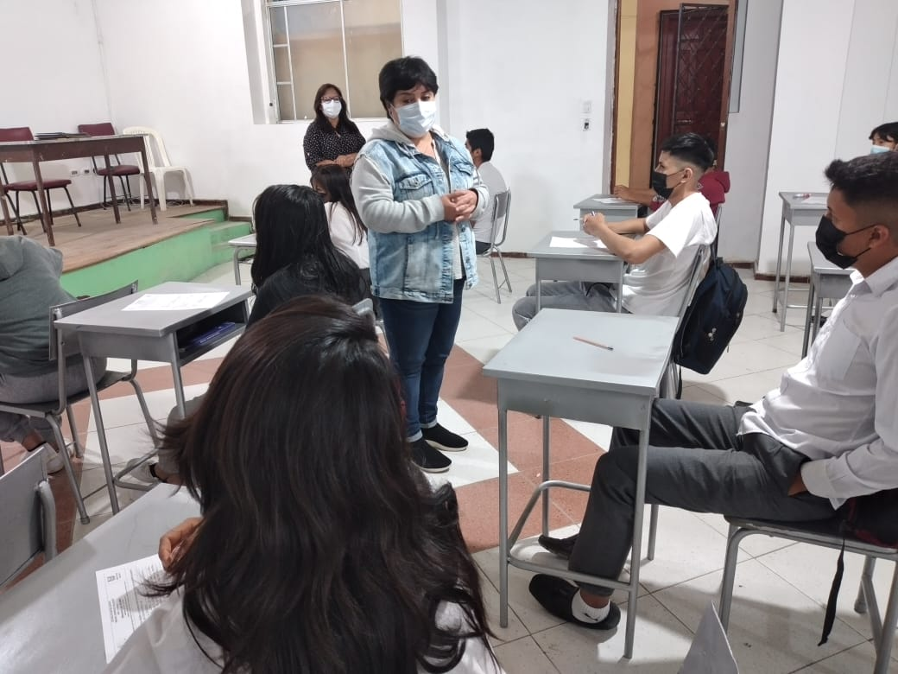
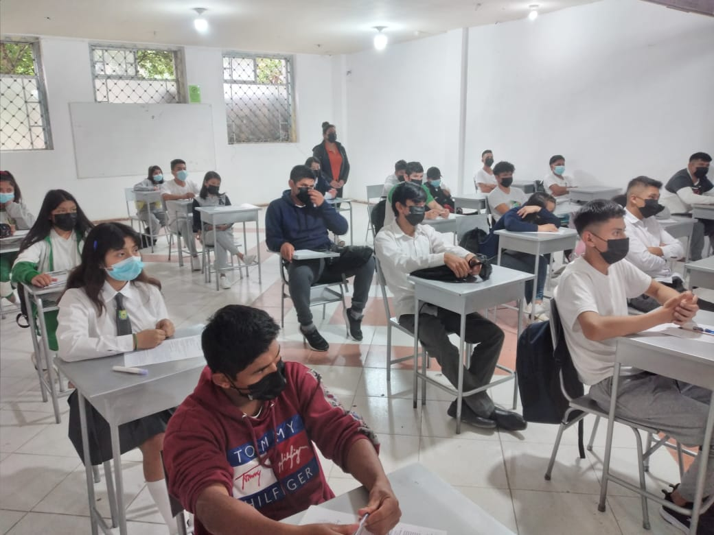

CUENTOS DE
NUESTRA COMUNIDAD
CARRERA DE PEDAGOGÍA DE LAS CIENCIAS EXPERIMENTALES INFORMÁTICA

Unidad Educativa
"Rafael Rodríguez Palacios"
Unidad Educativa
"Rafael Rodríguez Palacios"
El Colegio de Bachillerato Rafael Rodríguez Palacios fue fundado en el año 1981, en la parroquia de Malacatos, cantón Loja, provincia de Loja, Ecuador. Desde su creación, esta institución educativa se ha consolidado como un pilar fundamental para la formación académica y humana de la juventud de esta zona rural.
Durante más de cuatro décadas, el colegio ha enfrentado diversos retos relacionados con infraestructura, recursos tecnológicos y necesidades propias del contexto rural. Sin embargo, gracias al compromiso del personal docente, directivo y estudiantes, la institución ha logrado fortalecer su oferta educativa.
Inicialmente brindaba Educación General Básica y posteriormente amplió su servicio hasta el Bachillerato, ofreciendo una formación integral que combina conocimientos académicos, valores y participación comunitaria.

Actualmente, el Colegio de Bachillerato Rafael Rodríguez Palacios es una institución educativa fiscal perteneciente al sistema público ecuatoriano y supervisada por el Ministerio de Educación.
Se encuentra ubicado en la calle Alejandro Bravo, en el centro de Malacatos, facilitando el acceso de estudiantes de la parroquia y sectores cercanos.
Cuenta aproximadamente con 9 docentes comprometidos con la educación integral y una población estudiantil cercana a 133 jóvenes. Además, desarrolla actividades culturales, deportivas y académicas que fortalecen la formación de sus estudiantes.
Aunque posee avances importantes en infraestructura, continúa trabajando para mejorar sus recursos tecnológicos y espacios educativos.

El Colegio de Bachillerato Rafael Rodríguez Palacios se ha destacado por su compromiso con la formación académica y ética de sus estudiantes, promoviendo valores como responsabilidad, respeto y solidaridad.
La institución participa activamente en eventos culturales, celebraciones cívicas y actividades tradicionales de Malacatos, fortaleciendo la identidad local.
Su relación con estudiantes, familias y autoridades permite que la educación vaya más allá del aula y contribuya al desarrollo social de la parroquia.

El compromiso con la mejora educativa ha permitido que el Colegio de Bachillerato Rafael Rodríguez Palacios sea considerado dentro de diferentes estudios académicos relacionados con la gestión institucional.
Una investigación realizada en 2017 por el Magíster Miguel Enrique Valle Vargas analizó la influencia del Proyecto Educativo Institucional (PEI) en la calidad educativa del colegio.
Estos procesos investigativos han permitido fortalecer estrategias pedagógicas y mejorar continuamente la formación de los estudiantes.
